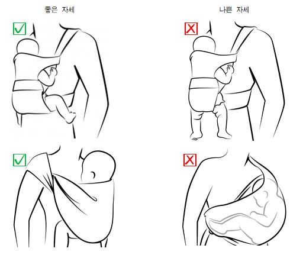

1. Phát triển
Ở giai đoạn này, cân nặng trung bình của bé trai là 7,0-7,9kg, bé gái là 6,4-7,3kg. Chiều cao của bé trai là 63,9-67,6cm, bé gái là 62,1-65,7cm.
1️⃣ Giác quan
Thị giác: Thị lực phát triển đến
mức có thể giao tiếp bằng ánh mắt và phân biệt màu sắc, vì vậy bé bắt đầu quan tâm đến các đồ
chơi có màu sắc. Bé nhận biết được các vật nhỏ hoặc các vật ở xa, khi có
đồ vật mới xuất hiện, bé sẽ nhìn chăm chú.
Thính giác: Bé phản ứng khi được
gọi tên, có thể phân biệt
được giọng nói tức giận và giọng nói dịu dàng của mẹ. Khi nghe giọng cáu gắt, bé có thể
khóc. Khi đặt đồ chơi phát ra âm thanh khác nhau ở hai bên tai và lần lượt phát âm thanh, bé sẽ
từ từ quay đầu để nhìn đồ chơi.
Xúc giác: Bé dùng ngón tay để nắm
đồ vật và có xu hướng đưa mọi thứ vào miệng. Khi được 6 tháng tuổi, bé sẽ dùng xúc giác để khám
phá đồ vật và hiểu về sự vật xung quanh.
2️⃣ Vận động, cử động
- Bé biết giữ vững cổ hoàn toàn, ngồi trong thời gian ngắn và khi nằm sấp có thể
nâng phần thân trên lên đến thắt lưng. Bé duỗi tay để tự lấy đồ vật, có thể cầm đồ chơi bằng cả
hai tay và chơi. Khi được đặt nằm ngửa, bé bắt
đầu lật người. Lực chân mạnh hơn nên khi đỡ bé đứng, bé có thể rèn luyện sức mạnh cho
chân. Khoảng 6 tháng tuổi, bé dần dần thử bò.
3️⃣ Nhận thức (học hỏi, tư duy, giải quyết vấn đề)
- Bé quan sát các vật xung quanh, thể hiện sự tò mò và
cố gắng với lấy đồ nằm ngoài tầm tay. Bé bắt đầu chuyển đồ vật từ tay này sang tay
kia. Bé có thể đảo mắt sang trái - phải để dõi theo các vật đang chuyển động, và nhận biết người
quen cùng đồ vật quen từ xa. Khi soi gương cùng mẹ, bé bắt đầu có khả năng phân biệt hình ảnh
của mẹ và khuôn mặt của chính mình trong gương, vì vậy, bé thích nhìn gương.
4️⃣ Ngôn ngữ, giao tiếp
- Bé có thể cười thành tiếng. Bé phản ứng lại âm thanh bằng cách tạo ra âm thanh. Khi bập bẹ, bé
nối các nguyên âm (“a”, “e”, “o”), phát ra các phụ âm (như “m”, “b” nhưng chưa
có nghĩa), và thích giao tiếp với bố mẹ.
Bé cũng phát ra những âm thanh thể hiện niềm vui hoặc không thích.
5️⃣ Kỹ năng xã hội, cảm xúc
- Bé thể hiện cảm xúc phong phú hơn: không hài lòng thì khóc, vui thì cười rạng rỡ, đôi
khi còn tíu tít vì phấn khởi. Bé phản ứng với cảm xúc của người khác, bắt đầu biết sợ người lạ,
nhận biết khuôn mặt người trong gia đình và phân biệt
người lạ. Bé có thể mỉm cười khi nhìn hình ảnh của mình trong
gương, và khi môi trường thay đổi, nét mặt có thể trở nên căng thẳng.
2. An toàn cho trẻ
Sử dụng ghế an toàn ô tô (car seat) đúng cách
- Ghế an toàn ô tô cần được lựa chọn phù hợp với giai đoạn phát triển của trẻ, đồng thời phải
lắp
đặt đúng cách ở hàng ghế sau của xe.
- Cả ghế sau bên trái và bên phải có trang bị dây an toàn 3 điểm đều có thể lắp ghế an toàn.
- Nếu lắp ghế an toàn ở ghế phụ phía trước, khi xảy ra tai nạn giao thông, túi khí bung ra có
thể
gây va đập mạnh, đe dọa nghiêm trọng đến tính mạng và sự an toàn cơ thể của trẻ.
- Cần lắp ghế an toàn đúng hướng. Khi chở trẻ dưới 10kg hoặc dưới 12 tháng tuổi, bắt buộc phải
lắp
ghế quay mặt về phía sau xe. Ngay cả sau 1 tuổi, đến độ tuổi mà nhà sản
xuất cho phép, việc lắp ghế quay về phía sau vẫn an toàn hơn.
- Ghế an toàn phải được cố định chắc chắn vào ghế xe, hạn chế tối đa sự rung lắc theo đúng hướng
dẫn lắp đặt. Ghế lắp lỏng lẻo có thể bị xê dịch mạnh khi xảy ra tai nạn, gây chấn thương thứ cấp
cho trẻ.
- Cần lắp tựa lưng và tựa đầu của ghế an toàn đúng cách. Tựa lưng phải được điều chỉnh góc
nghiêng phù hợp với giai đoạn phát triển của trẻ.
Tựa đầu (headrest) cần được điều chỉnh độ cao sao cho đỡ chắc đầu của trẻ. Nếu tựa đầu quá thấp
so với cơ thể trẻ, khi xảy ra tai nạn giao thông sẽ không thể bảo vệ đầy đủ đầu và cổ của
trẻ.
Sử dụng đai địu em bé an toàn
- Khi mua địu em bé, cần kiểm tra sản phẩm có chứng nhận an toàn hay không, hướng dẫn sử dụng
bằng
văn bản hoặc video có được làm dễ hiểu và rõ ràng để đảm bảo
sử dụng an toàn hay không.
- Khi đi mua, nên đưa em bé theo, yêu cầu nhân viên bán hàng bế bé và hướng dẫn cách điều
chỉnh đai sao cho vừa vặn và an toàn.
- Khi đeo đai, phải điều chỉnh để bé cử động thoải mái đầu-tay-chân, không che mặt trẻ và
trẻ có thể nhìn ra bên ngoài.
- Đảm bảo người sử dụng có thể tự mặc và tháo đai địu mà không cần trợ giúp, tất cả các dây đai
phải điều chỉnh
được bằng một tay.
- Trước khi địu trẻ, có thể tập luyện trước với búp bê hoặc gấu bông.
- Mang giày dép dễ đi, đồng thời kiểm tra bề mặt đường đi có bằng phẳng hay không.
- Không sử dụng đai địu vào những ngày thời tiết quá nóng, vì nhiệt độ cơ thể của người lớn và
đai có thể làm nhiệt độ cơ thể trẻ tăng lên. Nên dùng xe đẩy
thay thế.
- Khi nấu ăn, không địu trẻ phía trước, vì trẻ có thể bị bỏng.

3. Cho bé bú sữa mẹ và sữa bình
A. Cho bú sữa mẹ
- Sau sinh, nên bắt đầu cho bé bú sữa mẹ càng sớm càng tốt (trong vòng 30 phút đến 1 giờ).
Khuyến
nghị rằng trong 6 tháng đầu sau sinh, bé chỉ nên bú hoàn toàn sữa mẹ, và từ sau 6 tháng thì bắt
đầu bổ sung thức ăn dặm.
Trẻ đang bú mẹ từ 1-6 tháng tuổi trung bình mỗi ngày bú khoảng 750-800cc (có thể khác nhau tùy
từng bé).
- Để phòng ngừa căng tức ngực (ứ sữa), nhiều trường hợp cần vắt sữa mẹ. Có thể dùng máy hút sữa,
nhưng nếu nắm vững kỹ thuật vắt sữa bằng tay, sữa thậm chí có
thể ra hiệu quả hơn so với dùng máy. Trước khi vắt sữa, nên tắm nước ấm hoặc chườm khăn ấm lên
ngực.
Sử dụng máy hút sữa
- Thời điểm thích hợp để hút sữa mẹ là buổi sáng sau khi ngủ đủ giấc (lúc này lượng sữa nhiều
nhất),
giữa các cữ bú, và khi bé không bú hết cả hai bên ngực.
- Khi chuẩn bị quay lại làm việc, nên bắt đầu hút sữa trước khoảng 2 tuần, điều chỉnh thời gian
hút gần giống với thời gian có thể hút tại nơi làm việc.
- Rửa các bộ phận của máy hút sữa tiếp xúc trực tiếp với sữa bằng dung dịch tẩy rửa chuyên dụng,
sau đó tráng kỹ bằng nước lạnh, đặt lên khăn sạch và để khô tự nhiên trong không khí.
- Chia sữa vào các dụng cụ chứa sữa (bình, hộp nhựa, túi nhựa) với lượng 60-120cc mỗi lần - cách
này thuận tiện khi rã đông và giúp tránh lãng phí khi bé không bú được nhiều trong một lần.
~ Cách bảo quản sữa mẹ ~
| Tình trạng sữa mẹ | Thời gian bảo quản | ||
|---|---|---|---|
| Nhiệt độ phòng (25℃) | Ngăn mát (0-4℃) | Ngăn đá riêng | |
| Sữa mẹ vừa vắt | 4-6 giờ | 2-3 ngày | 3-4 tháng |
| Sữa mẹ đã rã đông | Không bảo quản được | Dùng trong vòng 24 giờ | Không được tái đông |
Lưu ý khi bảo quản sữa mẹ
- Trong các loại dụng cụ chứa sữa, chai thủy tinh hoặc nhựa cứng phù hợp để bảo quản lâu dài,
túi
nhựa có nguy cơ bị nhiễm bẩn hoặc rò rỉ khi bảo quản lâu, vì vậy chỉ nên dùng để trữ ngắn hạn
trong vòng 3 ngày.
- Nên ghi ngày giờ hút sữa và lượng sữa lên dụng cụ chứa. Để phòng tránh nhiễm bẩn, mỗi túi trữ
chỉ nên chứa sữa vắt trong một lần.
- Sữa mẹ sau khi hút cần để nguội rồi mới đông lạnh.
- Khi rã đông sữa mẹ, lấy sữa đông ra trước 10-12 giờ, để trong ngăn mát, sau đó làm ấm bằng
cách
đặt trong nước ấm dưới 37°C để rã đông, sau đó làm ấm bằng cách chưng
cách thủy trong nước ấm trước khi cho bé bú.
- ❌Không sử dụng lò vi sóng để rã đông sữa mẹ, vì sẽ làm
mất các thành phần miễn dịch trong sữa và có thể gây bỏng miệng cho bé.
- Khi sữa mẹ được rã đông, chất béo sẽ tách lớp và nổi lên trên, hãy lắc nhẹ theo chuyển động
tròn
để chất béo hòa đều trở lại.
- Nếu cho bé bú sữa đã rã đông mà còn thừa, cần bỏ đi, không nên tiếc.⚠️
- Các thành phần miễn dịch trong sữa mẹ được bảo toàn tốt hơn khi bảo quản ngăn mát so với bảo
quản đông lạnh.
- Khi bảo quản đông lạnh, thể tích sữa mẹ sẽ tăng lên, do đó, không đổ đầy kín hộp đựng hoặc túi
trữ sữa. Sau 3 tháng, các thành phần chất béo trong sữa mẹ bắt đầu bị phân hủy, vì
vậy không nên để quá lâu. Để ngăn ngừa nhiễm bẩn, cần đóng kín hoàn toàn hộp đựng hoặc túi trữ
sữa
mẹ.
B. Cho bú sữa công thức
- Trẻ sơ sinh thường bú 6-8 lần trong 24 giờ, tuy nhiên không có
lượng sữa hay số lần bú cố định
bắt buộc. Mỗi trẻ có nhu cầu bú khác nhau, có trẻ bú với khoảng cách ngắn, có trẻ bú với khoảng
cách dài hơn. Hãy cho bé bú bất cứ khi nào bé đói.
- Khi bé được 3-6 tháng tuổi, lượng sữa công thức cần thiết là khoảng 120cc cho mỗi kg cân nặng
mỗi
ngày.
- Ví dụ: bé 5 tháng tuổi, nặng 7kg → cần khoảng 840cc/ngày. Dù bé muốn bú nhiều hơn, không nên
vượt quá 960cc/ngày.
Nên ghi lại lượng sữa bé bú mỗi ngày để theo dõi.
- Thông tin về lượng sữa theo độ tuổi dưới đây chỉ mang tính chất tham khảo, có thể không hoàn
toàn phù hợp với từng bé.
~ Liều lượng cho bé ăn ~
| Độ tuổi | Số lần bú | Khoảng cách | Lượng sữa | Ghi chú |
|---|---|---|---|---|
| Sơ sinh | 8-12 lần | 2-3 giờ | 50-100cc / lần | Cho bú cả ban đêm khi bé có nhu cầu |
| 1-4 tháng | 4-10 lần | 2-4 giờ | 100-200cc / lần | Duy trì số lần và lượng sữa tương đối đều đặn |
| 5-6 tháng (Ăn dặm giai đoạn đầu) |
4-6 lần | 4-6 giờ (ban ngày) | 160-200cc / lần (800-1.000cc/ngày) |
Chỉ ăn dặm khoảng 1 lần/ngày Sữa vẫn là nguồn dinh dưỡng chính |
| 7-8 tháng (Ăn dặm giai đoạn giữa) |
3-5 lần | 5-6 giờ (ban ngày) | 160-240cc / lần (700-800cc/ngày) |
Ăn dặm 2 bữa + 1 bữa phụ Tăng dần tỷ lệ thức ăn dặm Xen kẽ giữa cho ăn và cho bú |
| 9-11 tháng (Ăn dặm giai đoạn cuối) |
2-3 lần | Sáng / Trưa / Tối | 600-800cc / ngày |
Ăn dặm 3 bữa + 1 bữa phụ Xen kẽ giữa các cữ sữa |
| 12-4 tháng (Hoàn tất ăn dặm & ăn như người lớn) |
2 lần | Sáng / Chiều | 400-600cc / ngày |
3 bữa chính + 2 bữa phụ Tập theo nhịp ăn của người lớn |
C. Cho bé ăn dặm bước đầu (5-6 tháng tuổi)
Hiểu về ăn dặm giai đoạn đầu
- Trước khi chính thức cho bé ăn dặm, như một bước chuẩn bị, có thể cho
bé nếm thử một chút nước
ép/đồ lỏng để bé nhận biết rằng ngoài sữa còn có các loại thức ăn khác. Như vậy, việc
bắt đầu ăn
dặm sẽ thuận lợi hơn nhiều. Nếu thấy bé đã đến khoảng 5-6 tháng tuổi mà vội vàng làm thức ăn dặm
cho bé ăn ngay, bé có thể từ chối, vì vậy, nên có giai đoạn chuẩn bị.
- Đối với bé đang trong giai đoạn chuẩn bị ăn dặm, cháo loãng hoặc súp ở dạng lỏng, dễ
nuốt và không gây khó khăn cho bé là phù hợp.
- Súp không nên quá đặc, mà nên loãng như nước để bé dễ nuốt. Khi bé bắt đầu
ăn cháo loãng, có thể lần lượt thay đổi khẩu vị bằng củ cải, cà rốt, bí, khoai tây,… mỗi lần một
loại rau để nấu
súp loãng cho bé ăn thử. 🙅♀️Không nêm muối hay đường, mà nên để bé cảm
nhận vị
tự nhiên của chính
loại rau đó.
Mục đích và phương pháp ăn dặm giai đoạn
đầu
- Mục đích của ăn dặm giai đoạn đầu không chỉ là bổ sung dinh dưỡng còn thiếu khi chỉ bú sữa mẹ
hoặc sữa công thức, mà chủ yếu là giúp bé trải nghiệm nhiều hương vị khác nhau và tập thói quen
ăn bằng thìa. Đây là thức ăn dặm đầu tiên mà bé được ăn sau khi chỉ quen với sữa mẹ, vì vậy, cần
bắt đầu một cách thận trọng.
- Thức ăn dặm nên được chế biến ở độ lỏng vừa phải, trôi nhẹ qua cổ
họng. Nguyên tắc là bắt đầu
từ
1 thìa mỗi ngày, sau đó quan sát tình trạng của bé để tăng dần lượng ăn. Nếu bé không
thích ăn
dặm, bạn cũng có thể bắt đầu ở mức chỉ cho vào miệng rồi lấy ra. Khi thêm thực phẩm mới, hãy cho
mỗi ngày một loại, và quan sát trong vài ngày xem bé có phản ứng bất thường hay không.
- Nên cho bé ăn dặm vào lúc bé vui vẻ, và mẹ cũng có thời gian thoải mái. Thông thường, khoảng
10
giờ sáng là phù hợp. Việc cố định thời gian ăn dặm gần giống nhau mỗi ngày sẽ giúp duy trì nhịp
sinh hoạt ổn định cho bé.
🥕 Lượng ăn dặm giai đoạn đầu: 30-80g
🥕 Số lần ăn dặm: 1 lần/ngày
🥕 Lượng sữa mẹ hoặc sữa công thức: 800-1.000 cc/ngày (mỗi cữ 160-200cc)
🥕 Số cữ bú: 4-6 lần/ngày
🥕 Khoảng cách giữa các cữ: 4-6 giờ
🥕 Khi cho bé ăn dặm, nên cho bé ăn dặm trước lúc đói, sau đó nếu chưa đủ no thì bổ sung thêm
sữa.
❗ Lưu ý:
① Mỗi lần chỉ thêm một loại thực phẩm.
② Thực phẩm mới nên được thêm cách nhau 4 ngày; từ 8 tháng tuổi có thể thêm cách nhau 2-3
ngày.
③ Không cho trẻ uống nước ép trái cây trước khi đủ 6 tháng tuổi.
④ Bắt đầu cho trẻ ăn thịt từ đủ 6 tháng tuổi.
~ Thực phẩm phù hợp & độ đặc khi ăn dặm ~
| Nhóm thực phẩm | Thực phẩm có thể dùng | Độ đặc / Cách chế biến |
|---|---|---|
| Ngũ cốc | Gạo, gạo nếp, khoai tây, khoai lang | Cháo loãng nấu tỷ lệ 1:10 hoặc loãng như súp |
| Thịt, cá, trứng, họ đậu | Thịt bò, lòng đỏ trứng, đậu Hà Lan, đậu đỏ | Nấu lấy nước dùng hoặc xay nhuyễn mịn rồi cho bé ăn |
| Rau củ | Bí ngòi, bắp cải, bông cải xanh, cà rốt, rau bina (từ 6 tháng) | Ép lấy nước hoặc xay nhuyễn mịn |
| Trái cây | Chuối, táo, lê | Ép lấy nước hoặc xay nhuyễn mịn |
Cách nấu cháo trắng loãng:
Nguyên liệu: 10g gạo đã ngâm + 100cc nước
Cách nấu:
① Cho gạo đã ngâm vào máy xay, xay thật nhuyễn.
② Cho gạo đã xay và nước vào nồi, để lửa lớn, vừa đun vừa khuấy bằng muôi cho đến khi sôi bùng
một lần.
③ Giảm xuống lửa nhỏ, tiếp tục khuấy và đun cho đến khi gạo nở và nhừ.
④ Lọc hỗn hợp qua rây mịn để không còn cặn.
4. Chăm sóc sức khỏe
1️⃣ Giấc ngủ
- Ở giai đoạn này, trẻ ngủ từ 12-15 giờ trong 24 giờ, trung bình khoảng 14
giờ.
- Trẻ bắt đầu hình thành thói quen ngủ ban ngày, mỗi lần ngủ tối đa khoảng 2 giờ, 2-3 lần mỗi
ngày. Khi trẻ ngủ, nên giữ không gian yên tĩnh và tối. Khi trẻ lớn hơn, thời gian
thức
tăng lên, trẻ sẽ khó ngủ trong môi trường ồn ào hoặc quá sáng.
- Thời gian ngủ buổi tối trở nên dài hơn. Ví dụ, khi trẻ được 6 tháng tuổi, có thể ngủ một giấc
dài khoảng 6 giờ vào buổi tối, có thể thức dậy ít nhất một lần vào ban đêm.
- Ở giai đoạn này, vẫn cần đánh thức trẻ để cho ăn.
- Nếu lo lắng rằng trẻ không ngủ đủ, nên ghi lại giấc ngủ của trẻ trong khoảng một tuần. Việc
này
giúp nắm bắt tình trạng một cách rõ ràng hơn. Có thể lập nhật ký theo từng ngày trong tuần, chia
mỗi ngày theo đơn vị giờ. Dùng màu sắc để đánh dấu thời điểm bắt đầu khi trẻ ngủ và thời điểm
kết thúc khi trẻ thức dậy. Ghi chép mỗi ngày liên tục trong một tuần.
- Sau đó, so sánh thông tin trong nhật ký với nhu cầu giấc ngủ trung bình của trẻ ở giai đoạn
này.
So với những trẻ khác cùng độ tuổi, tình trạng của con bạn như thế nào? Mỗi trẻ là khác nhau,
nhưng
nếu trẻ ngủ ít hơn rất nhiều, trẻ có thể đang mệt và cần được dỗ ngủ nhiều hơn.
- Trong quá trình tìm hiểu các cách giải quyết vấn đề giấc ngủ của trẻ, hãy tiếp tục ghi nhật ký
giấc ngủ. Điều này giúp đánh giá tiến triển và xác định mức độ thay đổi đang diễn ra, từ đó hỗ
trợ hiệu quả hơn.
2️⃣ Khám sức khỏe
- Trong khoảng 4-6 tháng tuổi, cần đưa trẻ đi khám sức khỏe lần thứ 2. Bác sĩ sẽ hỏi tình tình
và khám lâm sàng, đo các chỉ số cơ thể, cùng với đánh giá và tư vấn về phòng ngừa tai nạn an
toàn, dinh dưỡng (bú sữa), giấc ngủ, mức độ tiếp xúc với thiết bị điện tử,… nhằm kiểm tra và xác
nhận sự phát triển khỏe mạnh của trẻ.
- Thông thường, ở giai đoạn này, trẻ bắt đầu ăn dặm, vì vậy cần kiểm tra thời điểm bắt đầu ăn
dặm
và lượng thức ăn dặm hiện tại của trẻ.
- Trong vài tháng đầu sau sinh, ngay cả trẻ bình thường cũng có thể trông như bị lé mắt (lé
giả).
Do khó phân biệt tình trạng này, khi phát hiện cần đưa trẻ đi khám chuyên khoa mắt ngay. Một số
tình trạng như nhược thị - vốn khó phục hồi thị lực - rất khó phát hiện sớm nếu không được kiểm
tra kịp thời.
3️⃣ Tiêm chủng lúc 4 tháng tuổi
Các vắc-xin đã tiêm lúc 2 tháng tuổi như DTaP, bại liệt, phế cầu khuẩn (phòng viêm phổi),
Haemophilus influenzae type b (phòng viêm màng não) sẽ được tiêm mũi thứ hai vào thời điểm 4
tháng tuổi. Ngoài ra, vắc-xin viêm ruột do rotavirus (tiêm tự nguyện) cũng được tiêm mũi thứ hai
ở giai đoạn này.
4️⃣ Viêm da cơ địa (Atopic dermatitis)
- Viêm da cơ địa là bệnh do rối loạn chức năng của lớp sừng - lớp lipid kháng khuẩn, là cấu trúc
ngoài cùng của da. Do lớp màng dầu bảo vệ da khỏi các tác nhân bên ngoài bị yếu, nên vi khuẩn,
bụi bẩn và các chất gây dị ứng từ bên ngoài dễ xâm nhập, trong khi độ ẩm bên trong da liên tục
bị mất đi.
- Để ngăn chặn, cần loại bỏ các chất có hại bám trên da khi tắm rửa, đồng thời bổ
sung và giữ ẩm thường xuyên bằng kem dưỡng. Đây là lý do tắm và dưỡng ẩm đúng cách là yếu tố
quan trọng nhất.
- Sau 2-3 tháng tuổi, bệnh thường bắt đầu với tổn thương cấp tính, đặc trưng là ban đỏ xuất hiện
ở
hai bên má, thường được gọi là “chàm sữa”. Các tổn thương cũng dễ xuất hiện ở da đầu và những
vùng mặt duỗi của tay chân. Có trường hợp rỉ dịch nhiều, khi bị nhiễm trùng có thể hình thành
vảy tiết hoặc mụn mủ. Khi
trẻ
lớn hơn, mọc răng sữa, bị cảm, hoặc tiêm phòng, các tổn thương có thể trở nên nặng hơn.
- Khi tắm, nên dùng nước ấm vừa, thời gian ngắn khoảng dưới 10 phút, và
không tắm lâu bằng nước
nóng. Sữa tắm nên chọn loại có tính axit nhẹ đến trung tính, chất hoạt động bề mặt nhẹ, hạn
chế
tối đa việc làm tổn thương lớp dầu bảo vệ da, không gây kích ứng, và cần xả sạch
kỹ.
- Sau khi tắm, dùng khăn thấm nhẹ để lau khô nước trên da, và thoa kem dưỡng ẩm ngay khi da còn
ẩm
để giữ độ ẩm. Kem dưỡng ẩm nên được lựa chọn phù hợp với mùa và tình trạng da, và thoa thường
xuyên mỗi 4-6 giờ.
5️⃣ Ra ngoài cùng bé
- Thông thường, việc đưa trẻ ra ngoài đi chơi bắt đầu từ khoảng 5-6
tháng tuổi. Trước thời điểm
đó,
nếu không thật sự cần thiết thì nên tránh những chuyến đi xa.
- Trẻ nhỏ, dù khi ra ngoài lúc tâm trạng tốt, nhưng trong những tình huống xa lạ vẫn dễ cáu gắt.
Vì vậy, nếu dự định ra ngoài, nên kiểm tra trước xem bé có đang vui vẻ không, có bị sốt không,
và cho bé ngủ đủ giấc trước khi đi.
- Ngoài ra, việc xem dự báo thời tiết từ ngày hôm trước cũng rất quan trọng. ❌Nên tránh những
ngày
mưa, gió, thời tiết xấu, giờ cao điểm đi làm - tan làm đông đúc, và khoảng thời gian nắng
gắt từ
1-2 giờ chiều. ✅Thời điểm phù hợp để ra ngoài cùng bé là từ 10-12 giờ sáng và từ 2-5 giờ
chiều.
- Địa điểm đi chơi nên gần nhà. Những nơi đông người hoặc ở xa có thể khiến cả bé lẫn cha mẹ mệt
mỏi, khó chịu hơn là tạo kỷ niệm đẹp. Do đó, công viên gần nhà hoặc
vườn thú gần sẽ là lựa chọn thoải mái và dễ chịu hơn.
🌈Những vật dụng cần chuẩn bị cho bé
- Tã và sữa công thức hoặc thức ăn dặm: Chuẩn bị đủ dùng trong suốt thời gian ra ngoài. Sữa bột
nên được chia theo từng khẩu phần một lần, cho vào túi nilon và niêm phong kín.
- Mũ: Tránh các loại mũ quá chật hoặc có bề mặt thô ráp gây khó chịu cho trán hoặc da đầu của
bé.
- Quần áo và vớ dự phòng: Chuẩn bị áo khoác ngoài như áo len để phòng nhiệt độ thay đổi
đột ngột. Đồng thời, để phòng các tình huống như bé nôn ói, rò rỉ phân hoặc nước tiểu,
làm đổ sữa, cần mang theo một bộ áo ngoài, một bộ trong và một đôi vớ dự phòng.
- Khăn tắm lớn: Đôi khi bé có thể ngủ quên khi ra ngoài hoặc cảm thấy lạnh do chênh lệch nhiệt
độ,
vì vậy nên chuẩn bị khăn đủ lớn để quấn cho bé.
- Khăn giấy và khăn ướt: Khăn giấy dùng để lau miệng sau khi bé uống sữa, nước trái cây hoặc ăn
dặm, lau mông sau khi đi
đại tiện, hoặc lau tay khi bị bẩn. Khăn ướt nên chọn loại gói nhỏ, tiện mang theo. Ngoài ra,
cũng có thể mang theo khăn tay, khi
cần thì làm ướt bằng nước ấm để sử dụng.
- Thuốc dự phòng: Chuẩn bị thuốc hạ sốt và băng cá nhân.
- Khác: Chuẩn bị thêm nước uống, đồ ăn nhẹ đơn giản, thảm lót ngồi (chiếu trải) nếu cần.
6️⃣ Chơi cùng bé
Khi bé được 3-6 tháng tuổi, bé có thể có những biểu hiện sau:
- Bé nằm ngửa trong khi cầm và cho đồ chơi vào miệng.
- Khi nằm ngửa, bé đưa tay lên miệng và vươn tay để với lấy chân hoặc đồ chơi.
- Khi bé bắt đầu chú ý đến nhiều thứ hơn, hãy cho bé ngồi để bé có thể quan sát những gì đang
diễn
ra xung quanh.
Trò chơi ú òa
- Khi được 4 tháng tuổi, bé bắt đầu có khả năng sơ khai về tính thường tồn của đồ vật, nên sẽ
thích thú với trò chơi ú òa.
- Tính thường tồn của đồ vật là thuật ngữ chỉ việc bé hiểu rằng một vật vẫn tồn tại ngay cả khi
không chạm được, không nghe được và không nhìn thấy vật đó.
Cho bé nghe nhiều loại âm thanh
- Hãy hát cho bé nghe các bài hát và ru ngủ kèm theo cử động. Đặt hộp nhạc hoặc đồ chơi phát ra
âm
thanh trước mặt bé và bật lên. Lắc xúc xắc ở vị trí hơi lệch khỏi tầm nhìn trực tiếp của bé để
bé xoay đầu về phía có âm thanh.
Đọc sách cho bé nghe
- Việc đọc sách cho bé chưa bao giờ là quá sớm. Đọc sách cùng bé giúp phát triển nhiều kỹ năng
khác nhau của bé.
- Ở giai đoạn này, bé thích những cuốn sách có hình ảnh lớn, màu sắc tươi sáng, và sách làm từ
giấy dày tốt hơn sách bằng vải. Lý do là các trang dày dễ lật, và dễ lau chùi hoặc rửa sạch.
Đồ chơi phù hợp trong giai đoạn này:
- Đồ chơi có thể cắn, gặm với nhiều hình dạng, chất liệu và màu sắc
- Xúc xắc/lục lạc
- Hình ảnh in hoặc tranh trong tạp chí có màu sắc tươi sáng, tương phản rõ
- Đồ chơi lật đật
- Sách phát ra âm thanh, sách sờ chạm - cảm nhận
- Ngoài ra, các vật dụng bằng nhựa dễ tìm trong nhà như hộp nhựa hoặc thìa nhựa cũng có thể được
tận dụng làm đồ chơi cho bé.